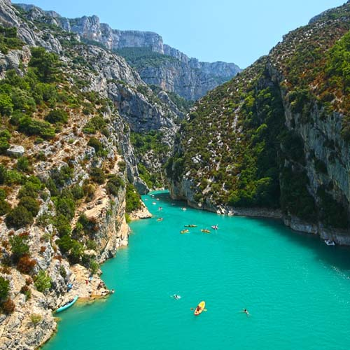
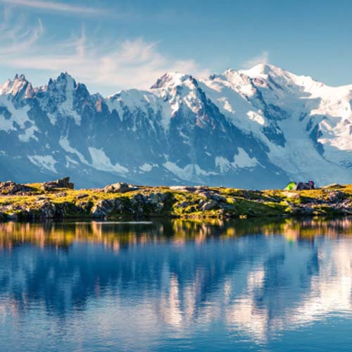
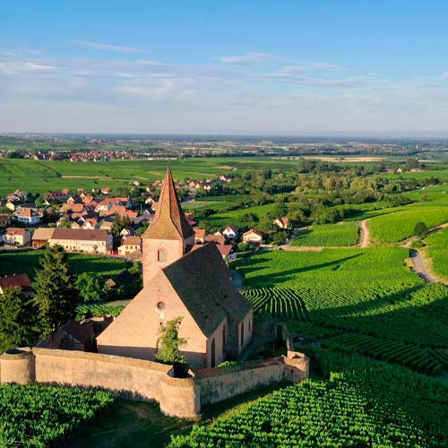
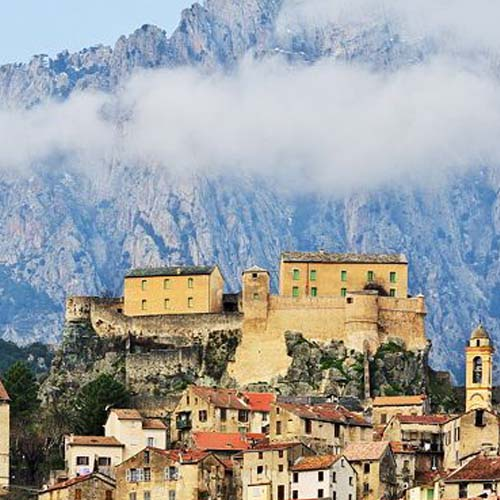
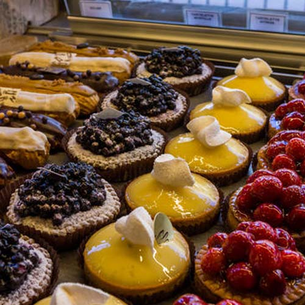
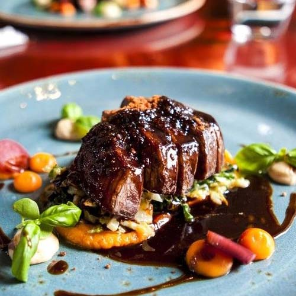
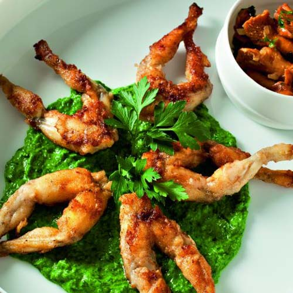
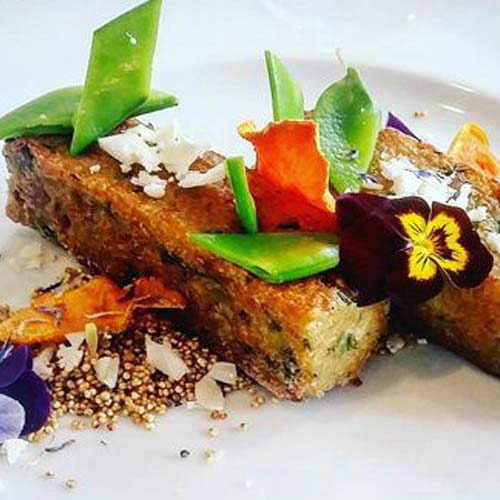

Parce que :
Le tourisme en France est un secteur économique important, aussi bien pour les Français qui choisissent d'y passer leurs vacances, que pour les étrangers qui viennent y faire un séjour. Selon des chiffres de l'Organisation mondiale du tourisme, depuis les années 1990, la France est la première destination touristique au monde. L'attrait touristique de la France s'explique par le grand nombre et la grande variété des points d'intérêt, la diversité des paysages, la richesse du patrimoine œnogastronomique, historique, culturel et artistique, le climat tempéré et les facilités d'accès et d'infrastructures de transport, mais aussi par l'équipement important et varié du pays en structures d'accueil (hôtellerie, restauration, parcs d'attractions, etc.). Ainsi, chaque département français est un département touristique avec plusieurs points d'intérêt.
Régions et paysage




La gastronomie



